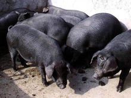

富源魔芋
魔芋又称蒟蒻，是天南星科魔芋属的多年生草本植物。全世界大约有170种，主要分布在亚洲和非洲。
我国魔芋资源丰富,有20多种。云南以其独特的地理环境及气候条件，具有“植物王国”的美称，共有魔芋品种17个，
占全国魔芋属种质资源的63%。而富源以花魔芋品种为主，品质好、色泽佳，被魔芋牌视为精品，曾创下亩产高达11吨的纪录。
中华民族是研究和利用魔芋最早的民族。
富源黄梨
富源黄梨是云南省曲靖市富源县的特产。富源黄梨核小皮黄，果实特大，最大的可达1公斤；含糖量达11%。
为全省水果名产之一。黄梨原产本县营上镇速助村，原名速助黄皮梨，后经省定名为“富源黄梨”，是云南省良种梨之一。

富源大河乌猪
大河乌猪是在大河猪选优提纯的基础上，适度导入外部育成的瘦肉型猪种。因原产地位于曲靖市富源县营上镇与大河乡一带，故称“大河乌猪”。
富源火腿
大河乌猪开发的富源火腿，在1999年武汉第五届中国国际食品博览会上荣获“中国名优食品”奖牌。
墨红白芸豆
墨红白芸豆产于海拔2200---2700米的冷凉彝族地区--法土梁子，白芸豆生长期长，豆粒蛋白质含量高达20%以上，
脂肪为1.5%，碳水化合物占63%，还富含铁、钙和维生素B1B2等。
富源水蜜梨
水蜜梨曾是富源历史上的地方“贡品”，原产中安镇清水沟村，又名“清水蜜梨”或清水梨，主要分布在县城西面的海坪、厦格、石岗、寨子口等地。
清水蜜梨属晚熟品种，果实9月下旬成熟。
富源酸菜猪脚
富源酸菜猪脚是云南省曲靖市富源县的特色美食。富源酸菜猪脚是一道美味的佳肴，营养丰富，适合广大人群，具有很多的食疗作用，
酸菜酸爽，加上猪脚，也不会觉得腻。酸菜味道咸酸，口感脆嫩，色泽鲜亮，香味扑鼻，开胃提神，醒酒去腻，不但能增进食欲、帮助消化，
还可以促进人体对铁元素的吸收。猪蹄性平，味甘威，入脾、胃，具健脾益气、补虚弱、填肾精、健腰膝等功效。
富源魔芋
富源全羊汤锅香飘两省，重在一个“全”字。羊肉集百草精华，全羊汤锅荟萃羊身之宝，就此摆开一场味觉的盛宴。富源美食文化氛围浓厚。
在众多美食中，全羊汤锅是其中的一朵“奇葩”。在富源，要吃全羊汤锅的去处有很多，但如果是周末有时间，或是要款待外地朋友，胜境关是首选。
在那里，不仅可以看到厚重文化积淀的历史见证，看到自然气候的天然分野，还可以在获得精神愉悦的同时，享受味觉的盛宴——小街子全羊汤锅。
富源酸菜
富源酸菜之所以成其为一种地方特产的代表，在于它独特的口味和与众不同的制作方法。
寻常意义上的酸菜，是将青菜洗净晾晒切碎后和上盐、辣椒、花椒等诸多佐料揉搓，然后置于缸内密封，
待微生物自然发酵形成一种爽口的酸味。这样的酸菜属咸菜系列，通常用来开胃或做其他菜的配料，像曲靖人爱吃的酸菜剁肉、
酸菜洋芋之类，这种酸菜就必不可少。而从制作到食用的过程，一般也在十天半月左右，并且是经久愈酸，风味愈好。
则黑酒
“则黑酒”产自云南省富源县营上镇，历史悠久，属地方一名特产品，素称“迤东一绝”。“则黑酒”以优质玉米为原料，
采用山泉水及传统工艺酿造而成，该酒属米香型，酒液清澈，透明净爽，入口甘醇，回味绵长。一九九七年被评为全国消费者信得过产品。
“则黑酒”分38度则黑醇和50度则黑酒，经县工商局注册登记，经有关部门检疫其卫生符合国家标准。